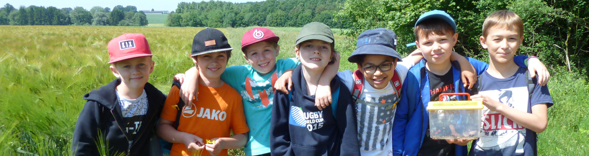
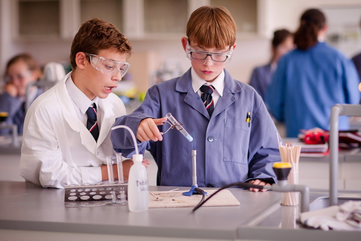
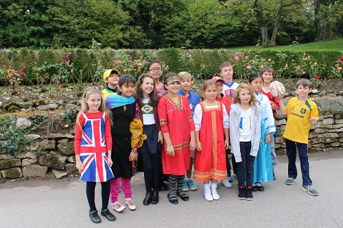
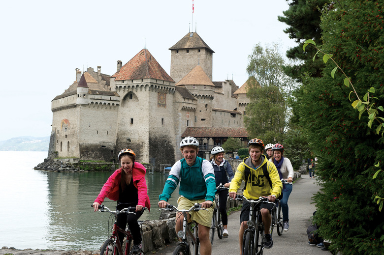

We Build Careers

Switzerland
My current choices shape my future life!
A memorable 2017 summer
for your children in amazing Switzerland
اردوهای تابستانی برای کودکان و نوجوانان در ماههای تیر و مرداد ۱۳۹۶ در سوییس
زمان اقدام: تا آخر اسفند ۹۵
تعداد: بسیار معدود

اردوها و مدارس شبانه روزی کشور سوییس از شهرت جهانی برخوردار هستند. برای درک جایگاه سیستم آموزشی این کشور همین بس که بیش از نیمی از شاگردان این قبیل موسسات آموزشی را کودکان و نوجوانان سه کشور انگلیس، آمریکا و کانادا تشکیل میدهند. اردوها و مدارس شبانه روزی طرف قرارداد موسسه کندو در بهترین شهرهای کشور سوییس از لحاظ موقعیت آب و هوایی، جاذبه های گردشگری و توریستی، موزه ها، پارک ها، قصرها و کاخ ها، سواحل و دریاچه های زیبا، رستوران ها و مراکز خرید واقع شده اند. شهر هایی چون Montreux ، Lausanne ، Genevaو Villars به دلیل داشتن طبیعت بکر و زیبا، هوای بسیار دلپذیر دریاچه ها و کوهستانها ی شگفت انگیزهر ساله پذیرای هزاران توریست از کشورهای مختلف دنیا می باشند .
اردوهای تابستانی یا چیزی که از آن با عنوان انگلیسی Summer camps یاد میشود فرصتی را برای کودکان و نوجوانان فراهم می کنند تا فعالیتهایی را که نمی توانستند در شرایط عادی در کلاس درس یا خانه انجام دهند جامه عمل بپوشانند. بچه ها با دنیایی از ممکن ها روبرو می شوند که در زندگی عادی و روزمره غیرممکن بودند. به سادگی وصداقت باید گفت که در این اردو ها غیرممکن به ممکن تبدیل می شود. (Impossible is possible)
هرساله کودکان و نوجوانان زیادی با ملیت های مختلف در این اردوهای تابستانی شرکت می کنند و کارشناسان باتجربه این قبیل مدارس با ارا ئه بهترین برنامه های تفریحی، آموزشی، ورزشی و گردشگری تابستانی به یاد ماندنی را برای آنها می سازند. اردوهای تابستانی تجربیات بسیار ارزشمندی را برای کودکان و نوجوانان فراهم میآورند تا بتوانند در محیطی کاملا بین المللی زبان مورد علاقه خود را را فراگیرند و با فرهنگ های مختلف آشنا شوند.
برنامه آموزشی اردوی تابستانی:
یکی از هدف های اولیه برگزاری اردوهای تابستانی امکان ایجاد محیطی چند ملیتی، جالب و مهیج با استفاده از روش های مدرن، امکانات آموزشی و مدرسین با تجربه برای فراگیری زبان در محیطی بین المللی می باشد. کلاس های زبان صبح هر روز از ساعت 8:30 تا ۱۱:۳۰ برگزار می شو ند. مدرسین با تجربه زبان با استفاده از روش های نوین می کوشند تا کودکان و نوجوانان در محیطی صمیمی و سرگرم کننده به فراگیری زبان مورد علاقه خود بپردازند. آنها همچنین با در نظر گرفتن فعالیت ها و برنامه های مختلف گروهی کمک میکنند تا شرکت کنندگان در این کلاسها زبان را در موقعیت های مختلف به کار ببرند.
فعالیت های ورزشی در اردو های تابستانی:
دانش آموزان بعد ازظهر هر روز در فعالیت ها و بازی های ورزشی شرکت می کنند. برخی از فعالیتهای ورزشی در زیر می آید:
fBasketball, Badminton, Football, Swimming, Volleyball, Minigol
Handball, Hockey, Table tennis, Hiking, and Tennis, horse riding, Music, Theatre, Judo,

برنامه های گردشگری در اردوهای تابستانی:
از مزیت های مدارس طرف قرارداد با موسسه کندو این است که بیشترین و بهترین مکان ها و برنامه های تفریحی و گردشگری را برای دانش آموزان در نظر میگیرند. معلمین این مدارس در تمام سفرها، فعالیت ها، بازدید های شهری و برنامه های گردشگری ،دانش آموزان را همراهی میکنند.
بعضی از معروف ترین مکان هایی که دانش آموزان در طول سفرشان بازدید خواهند کرد عبارتند از:
کارخانه شکلات سازی کایر: Cailler
سوئیس یکی از مشهورترین کشورهای دنیا در زمینه تولید شکلات بوده و شکلات به عنوان معروفترین سوغات این کشور محسوب می شود. به همین جهت سوئیسی ها مدعی هستند که بهترین شکلات جهان را تولید میکنند. کارخانه Cailler یکی از معروف ترین کارخانه های شکلات سازی در سوئیس می باشد و بازدید از این کارخانه یکی از جالب ترین برنامه های کالج می باشد. در این سفر دانش آموزان با انواع مختلف شکلات و روش ساخت آنها آشنا می شوند و دستگاه های شگفت انگیز شکلات سازی و فرم دهی شکلات ها را از نزدیک میبینند و از رایحه طعم دهنده های متنوع شکلات ها لذت می برند و می توانند شکلات های مختلفی را چشیده و یا خریداری نمایند.
کارخانه پنیر سازی: Gruyere Cheese Factory
یکی دیگر از جالب ترین برنامه های کالج بازدید از قدیمی ترین کارخانه های پنیر سازی دنیاست که در سال 1115 میلادی در منطقه Gruyere تاسیس شد. دانش آموزان طی این بازدید با صدها نوع پنیر در طعم های متفاوت و روش ساخت و مکان های نگهداری آنها آشنا می شوند. جالب ترین بخش این سفر برای دانش آموزان آشنایی با روش به عمل آمدن پنیر و بازدید از انبار های نگهداری پنیر میباشد.
قلعه شیون: Chillon Castle
یکی از زیباترین قصرهای تاریخی سوئیس، قلعه های مستقل شیون می باشد که در سواحل زیبای دریاچه معروف لمان واقع شده است . قلعه شیون متشکل از چندین قصر مستقل ولی به هم پیوسته است . در این بازدید دانش آموزان اصلی ترین نماد شهر لوزان را از نزدیک میبینند.
موزه المپیک: Olympic Museum
این مکان پربازدید در شهر لوزان داخل پارکی با ده ها آثار هنری و ورزشی قرار گرفته است و سالانه بیش از 250 هزار بازدید کننده دارد. این موزه در مقر اصلی کمیته بین المللی المپیک که یکی از سازمان های مهم شهر لوزان می باشد قرار گرفته است.
پارک هزارتو: Labyrinth Adventure Park
این باغ یکی از بزرگترین پارک های پر پیچ و خم دنیا می باشد. در مسیر این باغ بزرگ بیش از 18000 گونه مختلف گیاهی به چشم می خورد. در این بازدید دانش آموزان فرصت شرکت در بازی های مهیجی مثل زیپ لاین، تله کابین، ترامپولین ، جامپینگ، صعود از دیوار Climbing wall را خواهند داشت. در این باغ با توجه به فصل و زمان بازدید کنندگان جشن های عید پاک، هالوین و شکار گنج برگزار میشود.
پارک آبی: Acquapark
یکی از به یادماندنی ترین و مهیج ترین برنامه مدارس بازی در بزرگترین پارک آبی اروپا است. وجود سرسره های آبی، گردونه های 360 درجه، تونل های پر پیچ و خم، استخر های بزرگ، از جذابیت های این پارک میباشد.
از دیگر برنامه های تفریحی مدارس شرکت در سفرهای قایقی در دریاچه لمان ، بازدید از موزه Saint Bernard، بازدید از معدن نمک و سفر به دهکده های اطراف شهر می باشد.

کالج مونترو – اردو تابستانی ۲۰۱۷
rd to 16th of July 2017 From 3 - از ۱۲ تا ۲۵ تیر۱۳۹۶
From 17th to 30th of July 2017- از ۲۶ تا ۸ مرداد۱۳۹۶
برای دختران و پسران: ۱۰ تا ۱۷ سال
برای دو هفته شبانه روزی 5200CHF
و یا 1880CHF روزانه , دانش آموز با یکی از والدین در هتل اقامت خواهد داشت
کالج لوزان – اردو تابستانی ۲۰۱۷
From 8th to 22nd of July 2017 - از ۱۷ تیر تا ۳۱ تیر۱۳۹۶
From 8th to 29th of July 2017 - از ۱۷ تیر تا ۷ مرداد۱۳۹۶
From 8th of July to 5th of August 2017 - از ۱۷ تیر تا ۱۴ مرداد۱۳۹۶
From 8th to 12th of August 2017 - از ۱۷ تیر تا ۲۱ مرداد۱۳۹۶
From 8th to 19th of August 2017 - از ۱۷ تیر تا ۲۸ مرداد۱۳۹۶
برای دختران و پسران: ۱۰ تا ۱۷ سال
قیمت ها متغیر است: برای اطلاع لطفا تماس بگیرید.

کالج مونترو – اردو تابستانی ۲۰۱۷ – فقط دختران
From 9th to 23rd of July, 2017
From 9th to 30th of July, 2017
From 9th of July to 4th of August, 2017

قیمت ها از: ۷۲۰۰تا ۱۲۰۰۰ CHF
برای دختران: ۱۰ تا ۱۷ سال
برای دو هفته شبانه روزی 5200 CHF
برای 3 هفته شبانه روزی 7200
برای 4 هفته شبانه روزی 10000
کالج ویلار – اردو تابستانی ۲۰۱۷
برای کودکان: ۵ تا ۱۲ سال (بهمراه مادر یا پدر- محدودیتهای ویزا وجود دارد)
Session A: Summer 6 weeks- July and August
Session B: Summer 4 weeks-July
Session C: Summer 4 weeks-July & August

نشانی:ساری- میدان امام-ساختمان برلیان-طبقه اول-بالای بانک تجارت،واحد شماره 19
لطفا قبل از آمدن به موسسه با کارشناسان موسسه تماس بگیرید
موسسه اعزام دانشجو کندو دکتر عزیزی
با مجوز وزارت علوم
شماره های تماس جهت تعیین وقت
011333675000
09030612326
(زمان حضور آقای دکتر عزیزی: عصر های یک شنبه،سه شنبه و پنج شنبه از ساعت 16 الی 20)
Address:
Kühlwetterstraße 8.
Room Number 0227
52072 Aachen
Germany
Contact:01573 8947230-02418025258
Business Hours:
Mon 7:00PM - 9:30AM
Wed 7:00-9:30PM
Sat 10:00AM-6:30PM
Sun 10:00 AM - 6:30 PM


کلیه حقوق مرتبط به این وبسایت متعلّق به موسسه اعزام دانشجو کندو دانش آوران سام میباشد
cds.org.ir, Copyright©2015, All Rights Reserved
Design by : BOOMHUNK